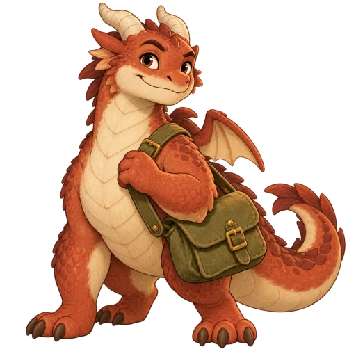
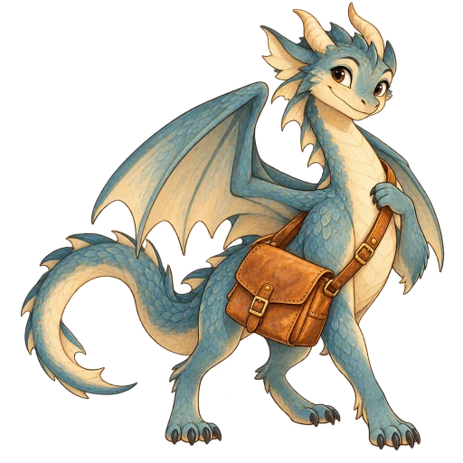

D1待机：扇翅 + 悬停 + 摆尾（常驻）翅膀 1.15s / 悬停+摆尾 2.3s，均为慢速循环
触发：常驻，只要龙停在某个节点就播。做法：把现有 dragonGlyph 里并进同一条 path 的翅膀拆成左右两片独立元素，各自绕肩点扇动；身体呼吸、整体悬停、尾巴摆动。注意：这是本提案唯一的"常驻动画"，幅度极小（≤4px），如需更安静可只保留扇翅。
分支 feat/game-animations未写入正式代码针对"双龙要有各种动作"。地图上的龙用真实节点坐标（厨房/沼泽/塔楼/集市/档案馆）与真实道路曲线；卡片里的龙直接用线上真实 WebP 龙图。点每张卡右上角重播，或顶部全部重播 / 自动循环。完整录屏见交付说明。
触发：常驻，只要龙停在某个节点就播。做法：把现有 dragonGlyph 里并进同一条 path 的翅膀拆成左右两片独立元素，各自绕肩点扇动；身体呼吸、整体悬停、尾巴摆动。注意：这是本提案唯一的"常驻动画"，幅度极小（≤4px），如需更安静可只保留扇翅。
触发：执行一回合、龙从 A 走到 B。做法：改用 offset-path 走真实边（直线/曲线/天空道各不相同），offset-rotate:auto 让龙头朝着飞行方向，替代现在"起点→终点直线平移"的临时 overlay。
触发：龙抵达节点。做法：垂直方向压缩-拉伸（squash & stretch）+ 一圈尘环 + 影子随高度收缩，落地才有重量感。配合现有 dispatch-dragon-arrival 用或替换它。
触发：取货 / 送达。做法：龙低头"啄"一下，货物同时从地上跳到龙身上（现有 dispatch-parcel-arrival 只做了货物到场，没做"龙的动作"）。
触发：回合耗尽 / 未能按时送达。做法：短促左右抖动 + 龙身去饱和变暗 + 一圈橙色警示扩张；不做全屏红闪，避免吓人。
触发：三条货全部按时送达、回到厨房。做法：两条龙错峰 90ms 起跳，和现有 confetti 一起放；现有 .dispatch-result-art 的旋转庆祝保留。


选龙卡 / 龙档案卡里常驻，让龙看起来是活的触发：常驻。说明：栅格图无法拆解，所以用极缓的整体呼吸；与 D1 的地图龙动效强度一致，不会各唱各的调。
触发：该龙本回合发生了移动。做法：原地跳一下 + 一点前倾，替代现在只有横向滑入的 dispatch-dragon-arrival。
触发：货物送达。做法：由上而下俯冲 + 落地压扁回弹，和 D3 的落地是同一套手感。
触发：货物被取上。做法：横向压扁再回弹（squash），与 D4 的"啄"配套。
触发：点选龙。说明：轻微上抬 + 放大 8%，配合已有的选中描边，明确"现在轮到它"。
触发：动作被拒绝（水渠涨水、体力不足、超载…）。说明：与地图上的 D5 呼应，但幅度减半，因为卡片本身较小。

触发：调度首屏（hero）与首页特色卡。说明：整体极缓漂浮；不做大幅缩放，避免滚动时晃眼。
| 编号 | 龙的什么动作 | 触发 | 时长 | 备注 |
|---|---|---|---|---|
| D1 | 待机扇翅 + 悬停 + 摆尾 | 常驻（停在节点） | 1.15s / 2.3s 循环 | 唯一常驻项；可只保留扇翅 |
| D2 | 沿道路曲线飞行 + 朝向跟随 | 回合执行移动 | 2.1s | 用 offset-path 替代直线平移 |
| D3 | 到达落地：压弹 + 尘环 + 影子 | 抵达节点 | 0.62s | 替代/叠加现有 dragon-arrival |
| D4 | 交接：低头啄 + 货跳上背 | 取货 / 送达 | 0.7s / 0.78s | 补上"龙自己的动作" |
| D5 | 失败：抖动 + 变灰 + 警示环 | 超时 / 被拦 | 0.52s | 不做全屏红闪 |
| D6 | 通关：两龙错峰跳跃 | 全部按时送达 | 0.8s（错峰 90ms） | 与现有彩带同时 |
| E1 | 卡片龙待机呼吸 | 常驻 | 3.4s 循环 | 位移 ≤3px |
| E2 | 卡片龙移动小跳 | 该龙本回合移动 | 0.55s | 替代纯横滑入场 |
| E3 | 送货俯冲 | 送达 | 0.6s | 与 D3 同一手感 |
| E4 | 抓取压缩 | 取货 | 0.42s | 与 D4 配套 |
| E5 | 选中抬头放大 | 点选龙 | 0.38s | 配合已有选中描边 |
| E6 | 失败抖动 | 动作被拒 | 0.5s | 幅度为地图龙的一半 |
| F1 | 首屏大图极缓漂浮 | 常驻 | 4.6s 循环 | 位移 ≤5px |
实现要点：地图龙需要把 dragonGlyph 从"一条 path 画完身体+翅膀"改成 身体 / 左翅 / 右翅 / 尾巴 四个元素，这是本提案唯一需要改画法的地方（不换美术风格，只拆结构）。其余全部是 CSS/WA API 动画，且沿用你现有的 clearMotion() 清理机制与 prefers-reduced-motion 降级（含常驻项——系统开启"减弱动态效果"时 D1/E1/F1 也一并关闭）。不改任何规则、文案与数值。